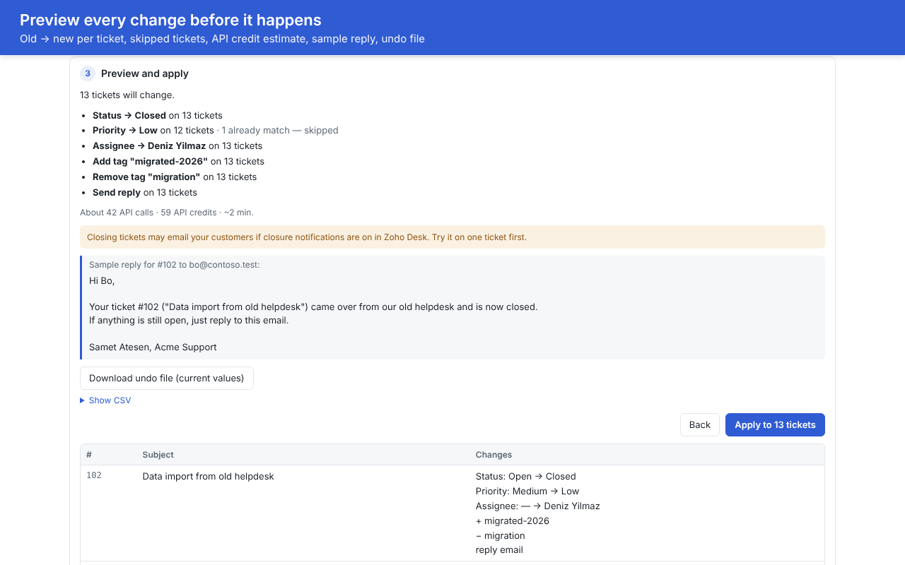

Bulk edit Zoho Desk tickets — with a preview and an undo file
Find tickets, see exactly what will change, change several fields and tags in one run, send personalized replies, and keep a file that sets everything back.
Bulk Actions Hub is in review on Zoho Marketplace. Want early access? Email support@atesensoftware.com.

What it adds to Zoho Desk
- Several fields at onceStatus, priority, assignee, classification and custom fields in one run. Zoho's built-in bulk update changes one field per action.
- Add and remove tags in bulkTag hundreds of tickets after a migration, or clean up a tag, in the same run.
- Exact previewTicket by ticket, old value → new value, before anything changes. Tickets that already match are skipped.
- Undo file and one-click revertDownload the old values before you apply. Revert the run, or restore from the file later.
- Personalized bulk repliesEmail each ticket's contact with placeholders like {{contact.firstName|there}} — on any edition that supports extensions.
- Saved presets and historySave filters + changes for the team. Every run is logged: who, when, how many.
Safety first
- Nothing changes until you confirm. Above 20 tickets you type
APPLY. - Pause or stop at any time; the result lists what was done, what failed and what did not run.
- Admins can switch all changes off (kill switch) and cap the number of tickets per run.
- The preview shows the Zoho Desk API credits a run will use.
Privacy
No server of ours is involved. The extension talks only to your Zoho Desk through Zoho's own authorization. Ticket content is never stored by us; undo files are saved to your own computer. See the privacy policy.
Price
$19 per Zoho Desk portal per month · $189.24 per year (17% off) · 15-day free trial. Billing is handled by Zoho Marketplace.